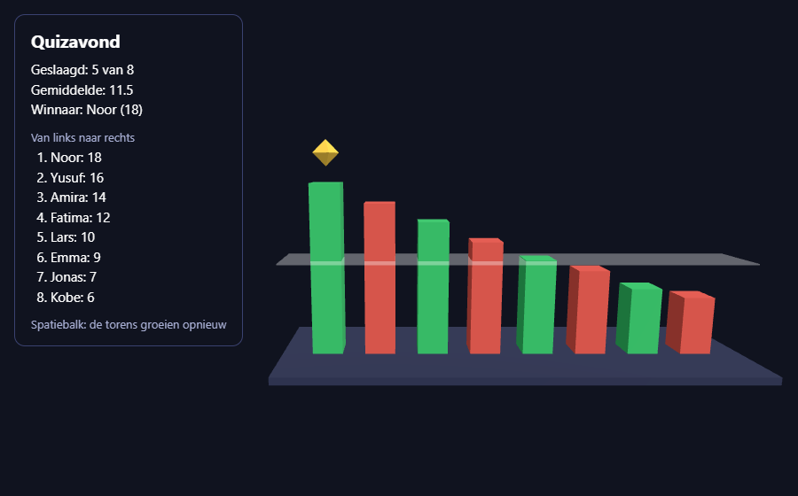

“Geslaagd: … van …”: uit welke regel code komt het tweede getal?
Voorspel de vier aanroepen uit de opgave.
Plak ze in check.js. Typ node check.js.
Welke aanname vind je? Wie wint bij een gelijke stand?
10:00
Schrijf het in je invulbestand.
Tot zo
Pauze
15:00
4.3
Een agent als eerste code reviewer
Een extra paar ogen, voor iemand anders je code leest.
Een vraag van de soort evalueren
Vraag een review op specifieke punten
Code review(codebeoordeling): iemand anders dan de auteur leest de code en geeft feedback.
✕ Een algemeen antwoord
Is deze code goed?
✓ Punten, context en een vaste vorm
Verander niets aan de code. Review stats.js op leesbaarheid, edge cases en de afspraken in AGENTS.md. Geef per opmerking de regel, het probleem en een voorstel.
Beoordeel ze één voor één
Drie vragen bij elke suggestie
Klopt het probleem? Test het in de code.
Past het voorstel in dit project? Leg het naast de afspraken.
Wordt de code er beter van?
overnemenaanpassenverwerpen
Begrijp je een opmerking niet? Vraag eerst uitleg. “Dat weet ik nog niet” is een eerlijk antwoord.
Een review van stats.js. De vier suggesties klinken even zeker.
Vier suggesties. Welke neem je over?
De namen top, a en x zeggen niet wat ze zijn.
Klopt, en het past.
overnemen
calculateAverage geeft NaN bij een lege lijst. Gooi een Error.
Klopt. Maar de afspraak zegt null.
aanpassen
Herschrijf het project in TypeScript.
De afspraak zegt: geen TypeScript.
verwerpen
De loop in top slaat de eerste speler over.
Fout. Getest: de eerste speler wint.
verwerpen
Een review kan ook een probleem melden dat er niet is. En “geen opmerkingen” is geen bewijs.
Suggesties zijn geen beslissingen.
Het model weet alleen wat in zijn context staat. Jij kent het project. Jij beslist.
Jouw beurt · alleen · met je agent harness
M2Een review beoordelen
Map scorebord, nieuw gesprek. Stuur de prompt uit de opgave.
Stel bij elke opmerking de drie vragen.
Begrijp je er één niet? Vraag uitleg: dat is je tweede prompt.
Test minstens één opmerking: een regel in check.js.
Welke suggestie klinkt algemeen, maar past hier niet?
14:00
Hoogstens twee prompts.
4.4
Codekwaliteit: meer dan werkende code
De code werkt. Is ze ook goed?
Beide vinden Noor
Twee versies, dezelfde winnaar
Versie A · zo staat ze in stats.js
functiontop(a) {
let x = a[0];
for (let i = 1; i < a.length; i++) {
if (a[i].score > x.score) {
x = a[i];
}
}
return x;
}
Versie B
functionfindWinner(players) {
let winner = players[0];
for (const player of players) {
if (player.score > winner.score) {
winner = player;
}
}
return winner;
}
“De code werkt” is geen kwaliteitscriterium. Het is het minimum.
Hiermee beoordeel je elke code
Drie criteria
📖
Leesbaarheid
Namen zeggen wat iets is of doet. Overal dezelfde conventies.
🧩
Structuur
Een function doet één ding. Elk bestand heeft één taak.
🔧
Onderhoudbaarheid
Een wijziging doe je op één plaats.
Code wordt vaker gelezen dan geschreven: door jou over drie maanden, of door wie het project overneemt.
Geslaagd met minstens 10 punten
Eén regel, drie plaatsen
// stats.js, in countPassed()if (score >= 10) {
// main.js, in createTower()if (player.score > 10) {
// main.js, in createPassLine()
passLine.position.y = 10 * heightPerPoint;
Wordt de grens 12 punten? Dan moet je de drie plaatsen kennen, en mag je er geen vergeten.
Anders is niet hetzelfde als beter.
Een agent levert bijna altijd iets terug. Toets het aan je criteria.
Een vraag om aan te passen: zeg wat verandert, en wat blijft
Zo vraag je een verbetering
De grens van 10 punten staat op drie plaatsen in de code. Geef ze één plaats: maak in stats.js een const passMark = 10, en gebruik die naam op de drie plaatsen. Het gedrag blijft precies hetzelfde. Verander niets anders.
sort zet de lijst in een andere volgorde: hier de hoogste score eerst.
Kan je die regel niet zelf schrijven? Geen probleem. Je moet wel weten wat ze doet: vraag uitleg, en test.
Live · voer ze uit met dezelfde lijst, en met een lege lijst
Vergelijk met feiten
Versie A
Versie B
De winnaar
Noor
Noor
Een lege lijst
null
undefined
De lijst daarna
dezelfde volgorde
een andere volgorde
De afspraken voor stats.js: een function verandert haar input niet, en geeft null terug bij een lege lijst.
Versie B geeft de juiste winnaar. En toch.
De kortste versie breekt het scorebord

sort sorteert de lijst players zelf.
De torens kregen hun kleur voor het sorteren, en hun hoogte erna.
Geen foutmelding.
Wie alleen de function test, ziet dit niet.
Een beslissing kan je verantwoorden. Een voorkeur niet.
“Ik kies versie A. Ze volgt de afspraken, en iedereen in het team kan ze lezen. Dat ze een paar regels langer is, weegt daar niet tegen op.”
Oefen dit met Test jezelf 4.5. Meer uitdaging? X12, in de extra-reeks.
4.6
Een fout aanpakken met een agent
Het paneel zegt 5. Tel de groene torens.
De fout zat er de hele les al in
Geen foutmelding. Toch klopt het niet.
Het paneel: geslaagd, 5 van 8.
Groene torens: 4.
De console is leeg.
Stuur nu niet “het klopt niet”. Zoek eerst zelf.
Stap 1 · zonder AI
Zoek waar het probleem zit
Maak het klein
Wie telt mee, maar is niet groen? Lars, met precies 10 punten.
→
Wat is juist?
README.md: geslaagd met minstens 10 punten. De toren is fout.
→
Waar zoek je?
Je kaart: countPassed() in stats.js, createTower() in main.js.
Stap 2 · verwacht gedrag, werkelijk gedrag en één concreet geval
Beschrijf de fout precies
✕ Het model moet raden
Het scorebord klopt niet. Los het op.
✓ Het model weet wat je ziet
Verander niets aan de code. Volgens README.md is een speler geslaagd met minstens 10 punten.
Verwacht: de toren van Lars (10 punten) is groen.
Werkelijk: het paneel telt Lars mee als geslaagd, maar zijn toren is rood.
Wat is de oorzaak, en welke oplossingen zie je?
Live · stap 3 · beoordeel het antwoord
Twee regels, één teken verschil
// stats.js, in countPassed()if (score >=10) {
// main.js, in createTower()if (player.score >10) {
Voor elke score behalve precies 10 geven ze hetzelfde resultaat. Daarom viel het niet op.
Een regel die op drie plaatsen staat, staat vroeg of laat op één plaats fout.
Jij beslist
Twee oplossingen
De kleine wijziging
In main.js wordt > vervangen door >=. De fout is weg. De regel staat nog op drie plaatsen.
De oorzaak
De regel krijgt één plaats, zoals hasPassed(score). Dat is een grotere wijziging: een aparte stap.
Is de fout weg?
Werkt alles nog wat al werkte?
Begrijp je waarom de code fout was?
Een oplossing die je niet begrijpt, is een toekomstige bug.
Kan je in twee zinnen zeggen waarom de code fout was, en waarom de oplossing werkt?
Jouw beurt · alleen · met je agent harness
M4Een fout zonder foutmelding
Stop je server. Open scorebord-fout en start het project.
Er zit een extra fout in: kijk naar de winnaar. Noteer het verwachte en het werkelijke gedrag.
Zonder AI: welke function, in welk bestand?
Prompt 1: de oorzaak. De agent verandert nog niets.
Prompt 2: de oplossing. Niets anders.
Controleer. Leg uit in twee zinnen.
12:00
Hoogstens twee prompts.
Jouw beurt · alleen
Werk af en lever in
Werk je invulbestand af: screenshots en antwoorden.
Lever het in via de opdracht Oefeningen module 4.
Niet klaar? Werk thuis af. Alles staat in de opgave.
09:00
Stop je server: Ctrl+C.
Onthoud vandaag
Acht regels
Kijk eerst zelf: lees, start het project en maak een kaart.
Vraag uitleg op het juiste niveau. De agent verandert niets.
Een uitleg is een startpunt. Test één bewering.
Volg de data, ook de input die niemand verwachtte.
Een review geeft suggesties. Jij beslist.
Anders is niet hetzelfde als beter.
Eerst je criteria, dan de code.
Verwacht, werkelijk en één concreet geval. Begrijp de oplossing.
Voor de volgende les
Wat doe je nu?
✍️
Oefeningen
Nog niet klaar? Werk je invulbestand thuis af en lever het in via de opdracht Oefeningen module 4.
✅
Test jezelf
De quizzen 4.1 tot en met 4.6. Ze tellen niet mee.
🗺️
Meer oefenen?
X1: de kaart van je eigen scène uit module 3. X3: bouw verder op het scorebord.
Volgende les: module 5, Debuggen en refactoren met AI.